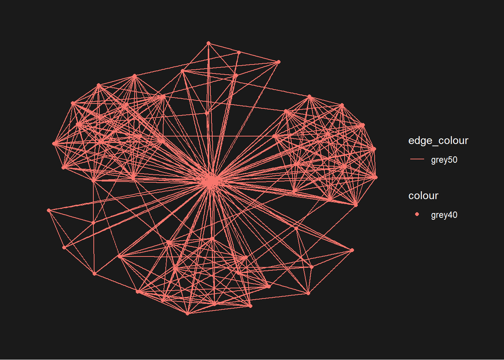

Code
pacman::p_load(igraph, tidygraph, ggraph,
visNetwork, lubridate, clock,
tidyverse, graphlayouts)With the assistance of ChatGPT
In this hands-on exercise, we will explore network data modeling, analysis, and visualization using R.
By the end of the session, we will be able to:
Create and manipulate graph objects using dplyr, lubridate, and tidygraph.
Visualize network graphs with ggraph.
Compute network metrics using tidygraph.
Enhance visualizations by integrating computed network metrics.
Develop interactive network visualizations using the visNetwork package.
In this hands-on exercise, six R packages will be installed and loaded for network data modeling and visualization:
pacman::p_load(igraph, tidygraph, ggraph,
visNetwork, lubridate, clock,
tidyverse, graphlayouts)In this hands-on exercise, we will work with two datasets from an oil exploration and extraction company:
In this step, we will import the datasets GAStech_email_node.csv and GAStech_email_edges-v2.csv into the RStudio environment using the read_csv() function from the readr package
GAStech_nodes <- read_csv("data/GAStech_email_node.csv")
GAStech_edges <- read_csv("data/GAStech_email_edge-v2.csv")We will examine the structure of the data:
glimpse(GAStech_nodes)Rows: 54
Columns: 4
$ id <dbl> 1, 2, 3, 4, 5, 6, 7, 44, 45, 46, 8, 9, 10, 11, 12, 13, 14, …
$ label <chr> "Mat.Bramar", "Anda.Ribera", "Rachel.Pantanal", "Linda.Lago…
$ Department <chr> "Administration", "Administration", "Administration", "Admi…
$ Title <chr> "Assistant to CEO", "Assistant to CFO", "Assistant to CIO",…glimpse(GAStech_edges)Rows: 9,063
Columns: 8
$ source <dbl> 43, 43, 44, 44, 44, 44, 44, 44, 44, 44, 44, 44, 26, 26, 26…
$ target <dbl> 41, 40, 51, 52, 53, 45, 44, 46, 48, 49, 47, 54, 27, 28, 29…
$ SentDate <chr> "6/1/2014", "6/1/2014", "6/1/2014", "6/1/2014", "6/1/2014"…
$ SentTime <time> 08:39:00, 08:39:00, 08:58:00, 08:58:00, 08:58:00, 08:58:0…
$ Subject <chr> "GT-SeismicProcessorPro Bug Report", "GT-SeismicProcessorP…
$ MainSubject <chr> "Work related", "Work related", "Work related", "Work rela…
$ sourceLabel <chr> "Sven.Flecha", "Sven.Flecha", "Kanon.Herrero", "Kanon.Herr…
$ targetLabel <chr> "Isak.Baza", "Lucas.Alcazar", "Felix.Resumir", "Hideki.Coc…head(GAStech_nodes)# A tibble: 6 × 4
id label Department Title
<dbl> <chr> <chr> <chr>
1 1 Mat.Bramar Administration Assistant to CEO
2 2 Anda.Ribera Administration Assistant to CFO
3 3 Rachel.Pantanal Administration Assistant to CIO
4 4 Linda.Lagos Administration Assistant to COO
5 5 Ruscella.Mies.Haber Administration Assistant to Engineering Group Manag…
6 6 Carla.Forluniau Administration Assistant to IT Group Manager head(GAStech_edges)# A tibble: 6 × 8
source target SentDate SentTime Subject MainSubject sourceLabel targetLabel
<dbl> <dbl> <chr> <time> <chr> <chr> <chr> <chr>
1 43 41 6/1/2014 08:39 GT-Seismi… Work relat… Sven.Flecha Isak.Baza
2 43 40 6/1/2014 08:39 GT-Seismi… Work relat… Sven.Flecha Lucas.Alca…
3 44 51 6/1/2014 08:58 Inspectio… Work relat… Kanon.Herr… Felix.Resu…
4 44 52 6/1/2014 08:58 Inspectio… Work relat… Kanon.Herr… Hideki.Coc…
5 44 53 6/1/2014 08:58 Inspectio… Work relat… Kanon.Herr… Inga.Ferro
6 44 45 6/1/2014 08:58 Inspectio… Work relat… Kanon.Herr… Varja.Lagossummary(GAStech_nodes) id label Department Title
Min. : 1.00 Length:54 Length:54 Length:54
1st Qu.:14.25 Class :character Class :character Class :character
Median :27.50 Mode :character Mode :character Mode :character
Mean :27.50
3rd Qu.:40.75
Max. :54.00 summary(GAStech_edges) source target SentDate SentTime
Min. : 1.00 Min. : 1.00 Length:9063 Length:9063
1st Qu.: 6.00 1st Qu.:13.00 Class :character Class1:hms
Median :23.00 Median :28.00 Mode :character Class2:difftime
Mean :22.51 Mean :26.44 Mode :numeric
3rd Qu.:36.00 3rd Qu.:39.00
Max. :54.00 Max. :54.00
Subject MainSubject sourceLabel targetLabel
Length:9063 Length:9063 Length:9063 Length:9063
Class :character Class :character Class :character Class :character
Mode :character Mode :character Mode :character Mode :character
GAStech_nodes[duplicated(GAStech_nodes),]# A tibble: 0 × 4
# ℹ 4 variables: id <dbl>, label <chr>, Department <chr>, Title <chr>GAStech_edges[duplicated(GAStech_edges),]# A tibble: 2 × 8
source target SentDate SentTime Subject MainSubject sourceLabel targetLabel
<dbl> <dbl> <chr> <time> <chr> <chr> <chr> <chr>
1 35 35 16/1/2014 17:05 RE: Guys… Non-work r… Dylan.Scoz… Dylan.Scoz…
2 35 30 16/1/2014 17:05 RE: Guys… Non-work r… Dylan.Scoz… Adan.MorluncolSums(is.na(GAStech_nodes)) id label Department Title
0 0 0 0 colSums(is.na(GAStech_edges)) source target SentDate SentTime Subject MainSubject
0 0 0 0 0 0
sourceLabel targetLabel
0 0 spec(GAStech_nodes)cols(
id = col_double(),
label = col_character(),
Department = col_character(),
Title = col_character()
)spec(GAStech_edges)cols(
source = col_double(),
target = col_double(),
SentDate = col_character(),
SentTime = col_time(format = ""),
Subject = col_character(),
MainSubject = col_character(),
sourceLabel = col_character(),
targetLabel = col_character()
)The SentDate field in GAStech_edges is incorrectly recognized as a character data type instead of a date. To ensure accurate analysis, it must be converted to the correct date format before proceeding.
The code below will be used to perform the changes.
GAStech_edges <- GAStech_edges %>%
mutate(SendDate = dmy(SentDate)) %>%
mutate(Weekday = wday(SentDate,
label = TRUE,
abbr = FALSE))The lubridate package simplifies working with dates and times in R.
dmy() converts SentDate to the correct Date format.
wday() extracts the day of the week as a decimal number or an ordered factor when label = TRUE.
abbr = FALSE ensures the full weekday name (e.g., “Monday”).A new column, Weekday, is created in the dataset to store the output of wday().
The Weekday values are in an ordinal scale (ordered categories).
Table below shows the data structure of the reformatted GAStech_edges data frame
list(GAStech_edges)[[1]]
# A tibble: 9,063 × 10
source target SentDate SentTime Subject MainSubject sourceLabel targetLabel
<dbl> <dbl> <chr> <time> <chr> <chr> <chr> <chr>
1 43 41 6/1/2014 08:39 GT-Seism… Work relat… Sven.Flecha Isak.Baza
2 43 40 6/1/2014 08:39 GT-Seism… Work relat… Sven.Flecha Lucas.Alca…
3 44 51 6/1/2014 08:58 Inspecti… Work relat… Kanon.Herr… Felix.Resu…
4 44 52 6/1/2014 08:58 Inspecti… Work relat… Kanon.Herr… Hideki.Coc…
5 44 53 6/1/2014 08:58 Inspecti… Work relat… Kanon.Herr… Inga.Ferro
6 44 45 6/1/2014 08:58 Inspecti… Work relat… Kanon.Herr… Varja.Lagos
7 44 44 6/1/2014 08:58 Inspecti… Work relat… Kanon.Herr… Kanon.Herr…
8 44 46 6/1/2014 08:58 Inspecti… Work relat… Kanon.Herr… Stenig.Fus…
9 44 48 6/1/2014 08:58 Inspecti… Work relat… Kanon.Herr… Hennie.Osv…
10 44 49 6/1/2014 08:58 Inspecti… Work relat… Kanon.Herr… Isia.Vann
# ℹ 9,053 more rows
# ℹ 2 more variables: SendDate <date>, Weekday <ord>The GAStech_edges dataset consists of individual email flow records, which are not optimal for visualization. To improve clarity and usability, the data will be aggregated based on key attributes such as the date, sender, receiver, main subject, and day of the week.
GAStech_edges_aggregated <- GAStech_edges %>%
filter(MainSubject == "Work related") %>%
group_by(source, target, Weekday) %>%
summarise(Weight = n()) %>%
filter(source!=target) %>%
filter(Weight > 1) %>%
ungroup()four functions from dplyr package are used. They are: filter(), group(), summarise(), and ungroup().
The output data.frame is called GAStech_edges_aggregated.
A new field called Weight has been added in GAStech_edges_aggregated.
Table below shows the data structure of the reformatted GAStech_edges data frame
list(GAStech_edges_aggregated)[[1]]
# A tibble: 1,372 × 4
source target Weekday Weight
<dbl> <dbl> <ord> <int>
1 1 2 Sunday 5
2 1 2 Monday 2
3 1 2 Tuesday 3
4 1 2 Wednesday 4
5 1 2 Friday 6
6 1 3 Sunday 5
7 1 3 Monday 2
8 1 3 Tuesday 3
9 1 3 Wednesday 4
10 1 3 Friday 6
# ℹ 1,362 more rowstidygraphIn this section, you will learn to create a graph data model using the tidygraph package, which offers a tidy API for network manipulation. Although network data is inherently untidy, it can be represented as two structured tables: one for nodes and another for edges. The tidygraph package allows seamless switching between these tables and integrates dplyr functions for easy manipulation. Additionally, it provides access to various graph algorithms, returning results in a format that supports a tidy workflow.
More information can be found:
tbl_graph objectThe tidygraph package provides two key functions for creating network objects - tbl_graph(), as_tbl_graph()
The tbl_graph() function constructs a tbl_graph network object using nodes and edges data.
Meanwhile, as_tbl_graph() converts various network data formats into a tbl_graph object. Supported formats include node and edge data frames, base R structures such as data frames, lists, and matrices, as well as network objects from igraph, network, dendrogram, hclust, data.tree, ape, and Bioconductor’s graph package.
activate() verb from tidygraph serves as a switch between tibbles for nodes and edges. All dplyr verbs applied to tbl_graph object are applied to the active tibble.
In the above the .N() function is used to gain access to the node data while manipulating the edge data. Similarly .E() will give you the edge data and .G() will give you the tbl_graph object itself.
tbl_graph() to build tidygraph data model.In this section, we will use tbl_graph() of tinygraph package to build an tidygraph’s network graph data.frame.
For more information we can refer to the reference guide of tbl_graph()
GAStech_graph <- tbl_graph(nodes = GAStech_nodes,
edges = GAStech_edges_aggregated,
directed = TRUE)GAStech_graph# A tbl_graph: 54 nodes and 1372 edges
#
# A directed multigraph with 1 component
#
# Node Data: 54 × 4 (active)
id label Department Title
<dbl> <chr> <chr> <chr>
1 1 Mat.Bramar Administration Assistant to CEO
2 2 Anda.Ribera Administration Assistant to CFO
3 3 Rachel.Pantanal Administration Assistant to CIO
4 4 Linda.Lagos Administration Assistant to COO
5 5 Ruscella.Mies.Haber Administration Assistant to Engineering Group Mana…
6 6 Carla.Forluniau Administration Assistant to IT Group Manager
7 7 Cornelia.Lais Administration Assistant to Security Group Manager
8 44 Kanon.Herrero Security Badging Office
9 45 Varja.Lagos Security Badging Office
10 46 Stenig.Fusil Security Building Control
# ℹ 44 more rows
#
# Edge Data: 1,372 × 4
from to Weekday Weight
<int> <int> <ord> <int>
1 1 2 Sunday 5
2 1 2 Monday 2
3 1 2 Tuesday 3
# ℹ 1,369 more rowstbl_graph allows for efficient data manipulation.By default, the nodes tibble is activated within a tbl_graph object, but this can be changed using the activate() function. To manipulate the edges tibble, such as sorting it by the highest “weight” values, the activate() function can be used to switch focus to the edges data, followed by the arrange() function to reorder the rows accordingly. This flexibility allows for efficient data manipulation within network structures.
GAStech_graph %>%
activate(edges) %>%
arrange(desc(Weight))# A tbl_graph: 54 nodes and 1372 edges
#
# A directed multigraph with 1 component
#
# Edge Data: 1,372 × 4 (active)
from to Weekday Weight
<int> <int> <ord> <int>
1 40 41 Saturday 13
2 41 43 Monday 11
3 35 31 Tuesday 10
4 40 41 Monday 10
5 40 43 Monday 10
6 36 32 Sunday 9
7 40 43 Saturday 9
8 41 40 Monday 9
9 19 15 Wednesday 8
10 35 38 Tuesday 8
# ℹ 1,362 more rows
#
# Node Data: 54 × 4
id label Department Title
<dbl> <chr> <chr> <chr>
1 1 Mat.Bramar Administration Assistant to CEO
2 2 Anda.Ribera Administration Assistant to CFO
3 3 Rachel.Pantanal Administration Assistant to CIO
# ℹ 51 more rowsVisit the reference guide of activate() to find out more about the function
ggraph is an extension of ggplot2, allowing users to apply familiar ggplot skills to network graph design.
Every ggraph network consists of three key components:
Nodes - Represent entities in the network
Edges - Show relationships between nodes
Layouts Define the overall structure and positioning of the nodes and edges
To refer to the respective vignettes provided for a comprehensive discussion of each of the aspect of ggraph
The following code uses ggraph(), geom_edge_link(), and geom_node_point() to create a network graph with GAStech_graph.
ggraph(GAStech_graph) +
geom_edge_link() +
geom_node_point()
The ggraph() function is the core plotting function, requiring both the dataset and a specified layout. Since ggraph() is built on igraph, it supports both igraph and tbl_graph objects as input.
In this section, we will use theme_graph() to remove the x and y axes.
g <- ggraph(GAStech_graph) +
geom_edge_link(aes()) +
geom_node_point(aes())
g + theme_graph()
ggraph includes a specialized ggplot theme, theme_graph(), optimized for network graphs by removing axes, grids, and borders while setting the default font to Arial Narrow (which can be customized).
To apply this theme, you can either:
theme_graph() makes it easy to change the coloring of the plot.
g <- ggraph(GAStech_graph) +
geom_edge_link(aes(colour = 'grey50')) +
geom_node_point(aes(colour = 'grey40'))
g + theme_graph(background = 'grey10',
text_colour = 'white')
ggraph supports various standard layouts, including star, circle, nicely (default), dh, gem, graphopt, grid, mds, sphere, random, fr, kk, drl, and lgl. The figures below illustrate the different layouts available in ggraph().
The code chunks below will be used to plot the network graph using Fruchterman and Reingold layout.
g <- ggraph(GAStech_graph,
layout = "fr") +
geom_edge_link(aes()) +
geom_node_point(aes())
g + theme_graph()We will colour each node by referring to their respective departments.
g <- ggraph(GAStech_graph,
layout = "nicely") +
geom_edge_link(aes()) +
geom_node_point(aes(colour = Department,
size = 3))
g + theme_graph()The thickness of the edges will be mapped with the Weight variable.
g <- ggraph(GAStech_graph,
layout = "nicely") +
geom_edge_link(aes(width=Weight),
alpha=0.2) +
scale_edge_width(range = c(0.1, 5)) +
geom_node_point(aes(colour = Department),
size = 3)
g + theme_graph()Faceting in ggraph is a powerful technique for visualizing network data by reducing edge over-plotting and distributing nodes and edges based on attributes.
There are three key faceting functions in ggraph:
In the code below, facet_edges() is used.
set_graph_style()
g <- ggraph(GAStech_graph,
layout = "nicely") +
geom_edge_link(aes(width=Weight),
alpha=0.2) +
scale_edge_width(range = c(0.1, 5)) +
geom_node_point(aes(colour = Department),
size = 2)
g + facet_edges(~Weekday)The code below uses theme() to change the position of the legend.
set_graph_style()
g <- ggraph(GAStech_graph,
layout = "nicely") +
geom_edge_link(aes(width=Weight),
alpha=0.2) +
scale_edge_width(range = c(0.1, 5)) +
geom_node_point(aes(colour = Department),
size = 2) +
theme(legend.position = 'bottom')
g + facet_edges(~Weekday)The code below adds frame to each graph.
set_graph_style()
g <- ggraph(GAStech_graph,
layout = "nicely") +
geom_edge_link(aes(width=Weight),
alpha=0.2) +
scale_edge_width(range = c(0.1, 5)) +
geom_node_point(aes(colour = Department),
size = 2)
g + facet_edges(~Weekday) +
th_foreground(foreground = "grey80",
border = TRUE) +
theme(legend.position = 'bottom')In the code below, facet_nodes() is used.
set_graph_style()
g <- ggraph(GAStech_graph,
layout = "nicely") +
geom_edge_link(aes(width=Weight),
alpha=0.2) +
scale_edge_width(range = c(0.1, 5)) +
geom_node_point(aes(colour = Department),
size = 2)
g + facet_nodes(~Department)+
th_foreground(foreground = "grey80",
border = TRUE) +
theme(legend.position = 'bottom')
Centrality measures are statistical indices used to assess the relative importance of actors within a network. The four key centrality measures are:
Degree
Betweenness
Closeness
Eigenvector
This exercise does not cover the mathematical principles behind these measures. For a deeper understanding, refer to Chapter 7: Actor Prominence in A User’s Guide to Network Analysis in R.
g <- GAStech_graph %>%
mutate(betweenness_centrality = centrality_betweenness()) %>%
ggraph(layout = "fr") +
geom_edge_link(aes(width=Weight),
alpha=0.2) +
scale_edge_width(range = c(0.1, 5)) +
geom_node_point(aes(colour = Department,
size=betweenness_centrality))
g + theme_graph()mutate() of dplyr is used to perform the computation.From ggraph v2.0 onward, tidygraph algorithms, including centrality measures, can be accessed directly within ggraph calls. This eliminates the need to precompute and store node or edge centrality measures before plotting.
g <- GAStech_graph %>%
ggraph(layout = "fr") +
geom_edge_link(aes(width=Weight),
alpha=0.2) +
scale_edge_width(range = c(0.1, 5)) +
geom_node_point(aes(colour = Department,
size = centrality_betweenness()))
g + theme_graph()The tidygraph package integrates various igraph community detection algorithms, making them easily accessible. These include:
Edge-betweenness (group_edge_betweenness)
Leading eigenvector (group_leading_eigen)
Fast-greedy (group_fast_greedy)
Louvain (group_louvain)
Walktrap (group_walktrap)
Label propagation (group_label_prop)
InfoMAP (group_infomap)
Spinglass (group_spinglass)
Optimal (group_optimal)
Some algorithms consider direction or weight, while others do not. Refer to the link for more details on tidygraph’s community detection functions.
The visNetwork package in R enables interactive network visualization using the vis.js JavaScript library.
The visNetwork() function requires:
The resulting graph is interactive, allowing users to:
Before we can plot the interactive network graph, we need to prepare the data model by using the code below.
GAStech_edges_aggregated <- GAStech_edges %>%
left_join(GAStech_nodes, by = c("sourceLabel" = "label")) %>%
rename(from = id) %>%
left_join(GAStech_nodes, by = c("targetLabel" = "label")) %>%
rename(to = id) %>%
filter(MainSubject == "Work related") %>%
group_by(from, to) %>%
summarise(weight = n()) %>%
filter(from!=to) %>%
filter(weight > 1) %>%
ungroup()The code below will be used to plot an interactive network graph by using the data prepared.
visNetwork(GAStech_nodes,
GAStech_edges_aggregated)Fruchterman and Reingold layout is used.
visNetwork(GAStech_nodes,
GAStech_edges_aggregated) %>%
visIgraphLayout(layout = "layout_with_fr") Visit Igraph to find out more about the visIgraphLayout’s argument.
visNetwork() looks for a field called “group” in the nodes object and colour the nodes according to the values of the group field.
The code below rename Department field to group.
GAStech_nodes <- GAStech_nodes %>%
rename(group = Department) When we rerun the code below, visNetwork shades the nodes by assigning unique colour to each category in the group field.
visNetwork(GAStech_nodes,
GAStech_edges_aggregated) %>%
visIgraphLayout(layout = "layout_with_fr") %>%
visLegend() %>%
visLayout(randomSeed = 123)In the code run below visEdges() is used to symbolise the edges.
The argument arrows is used to define where to place the arrow.
The smooth argument is used to plot the edges using a smooth curve.
visNetwork(GAStech_nodes,
GAStech_edges_aggregated) %>%
visIgraphLayout(layout = "layout_with_fr") %>%
visEdges(arrows = "to",
smooth = list(enabled = TRUE,
type = "curvedCW")) %>%
visLegend() %>%
visLayout(randomSeed = 123)Visit Option to find out more about the visEdges’s argument.
In the code below, visOptions() is used to incorporate interactivity features in the data visualization.
visNetwork(GAStech_nodes,
GAStech_edges_aggregated) %>%
visIgraphLayout(layout = "layout_with_fr") %>%
visOptions(highlightNearest = TRUE,
nodesIdSelection = TRUE) %>%
visLegend() %>%
visLayout(randomSeed = 123)Visit Option to find out more about the visOption’s argument.